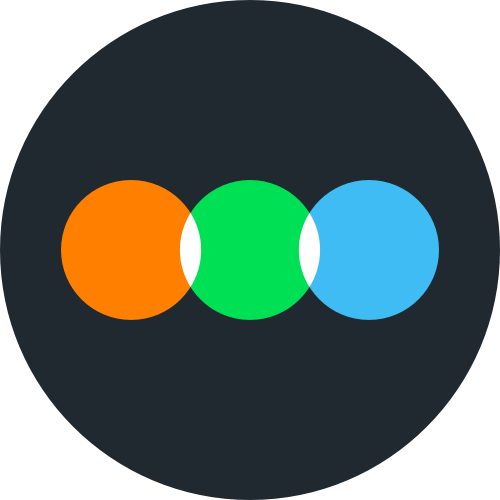
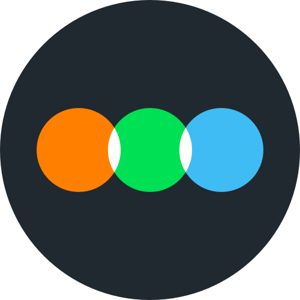

hello, visitor ☕
this is sarintonin's log-journal-shitpost-thing. i am currently a high school senior.
i'm interested in math, economics, design and quantum computing.
i like everything Radiohead and motorsport. i love Wong Kar-Wai and Quentin Tarantino movies. my long-time favorite show is House MD, and hence, the root of my anti-social behavior.
this website design was inspired in part by GreaterWrong, LessWrong's alternate browser, and one of my favorite sites on the interwebs.
i suppose you could find me rambling on my twitter
 , or my watchlist and movie ratings on my letterboxd
 and my scrobbles on my last.fm
, or my watchlist and movie ratings on my letterboxd
 and my scrobbles on my last.fm
 . contact me through my twitter dm.
. contact me through my twitter dm.
i intend to keep adding features and content. this website will continously evolve; but the pace is mostly dependent on me finding time.
oh and also — have a fun time reading, and criticism is encouraged (just don't
be a dick)
using keyboard shortcuts to navigate: refer to the below table to get the right combination for your browser
Windows
Linux
Mac
Firefox
Alt + Shift + key
On Firefox 57 or newer: Control + Option +
key or Control + Alt +
key
On Firefox 14 or newer: Control + Alt +
key
On Firefox 13 or older: Control +
key
Internet Explorer
Alt + key
Alt + Shift + key
N/A
Edge
N/A
Control + Option + key
Control + Option + Shift +
key
Google Chrome
Alt + key
Safari
N/A
Opera 15+
Alt + key
Control + Alt + key
Opera 12
Shift + Esc opens a contents list which are
accessible by accesskey, then, can choose an item by pressing
key
| Windows | Linux | Mac | |
|---|---|---|---|
| Firefox | Alt + Shift + key |
On Firefox 57 or newer: Control + Option +
key or Control + Alt +
key On Firefox 14 or newer: Control + Alt + key On Firefox 13 or older: Control + key |
|
| Internet Explorer | Alt + key Alt + Shift + key |
N/A | |
| Edge | N/A |
Control + Option + key Control + Option + Shift + key |
|
| Google Chrome | Alt + key | ||
| Safari | N/A | ||
| Opera 15+ | Alt + key | Control + Alt + key | |
| Opera 12 | Shift + Esc opens a contents list which are accessible by accesskey, then, can choose an item by pressing key | ||